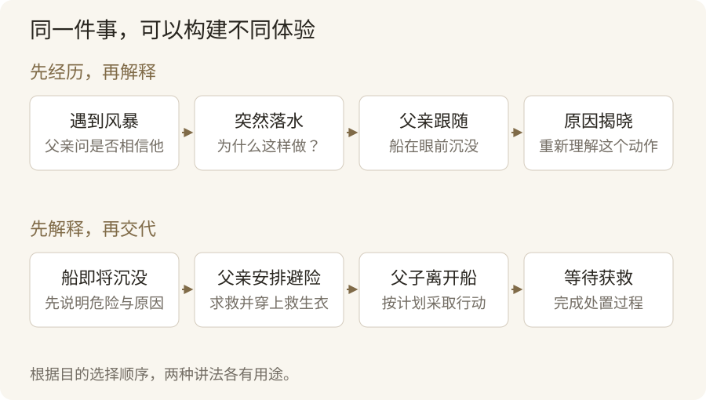
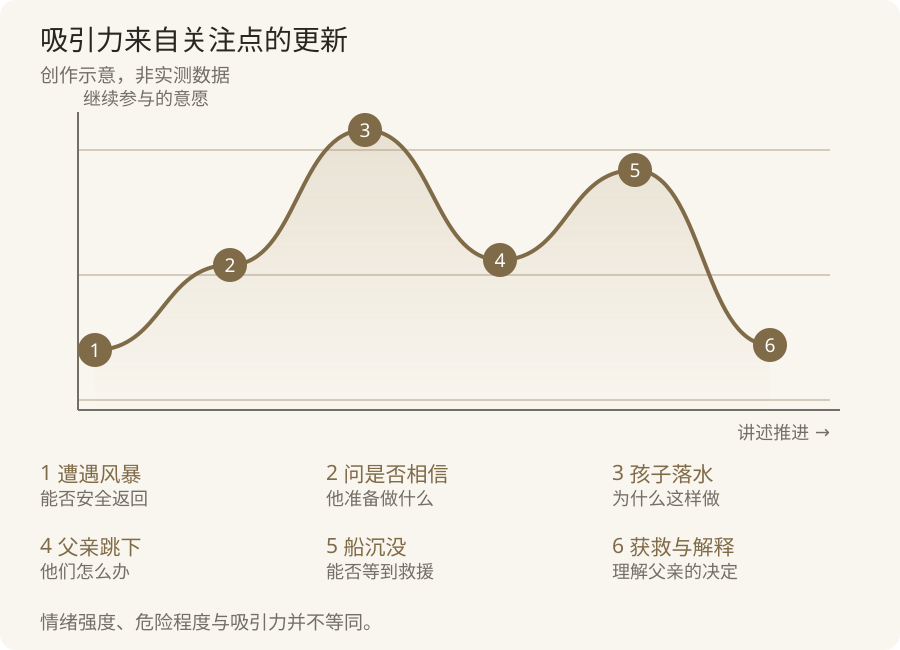
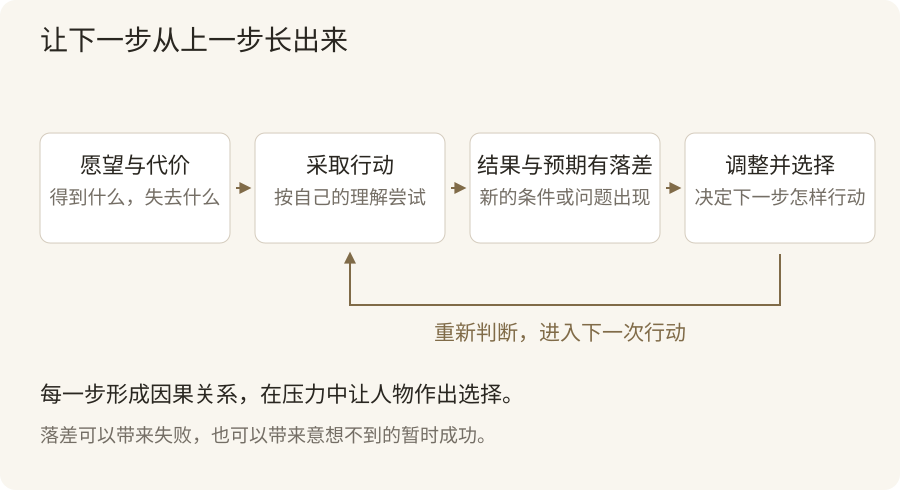
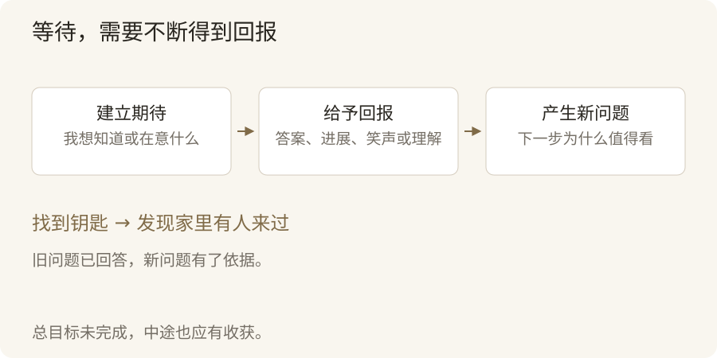

我听到过一个故事，彻底改变了我对创作的看法。
一个八岁的孩子，跟父亲乘小船出去捕鱼。
暴风雨来了。
他们距离海岸还有五英里。父亲给孩子穿上救生衣，凑到他耳边问了一句话。
“孩子，你相信我吗？”
孩子点头。
父亲把他推下了水。
读到这里，你大概会停一下。
为什么？
一个父亲，为什么要把自己的孩子推到暴风雨中的海里？
孩子浮出水面，海水冰冷，海浪翻涌。紧接着，父亲也跳了下来，紧紧抱住他。
他们看着那条小船翻转、沉没。
十五分钟后，海岸警卫队的直升机赶来，他们获救了。
孩子后来才知道，父亲已经发现船即将沉没，提前发出求救信号，告知了位置。他担心船翻沉后，两个人会被困在水下，才决定先离开船。
到这里，那个让人惊恐的动作，有了另一种意义。
父亲问的那句“你相信我吗”，也有了分量。
现在，我们换一种讲法。
一个父亲带孩子出海，发现船即将沉没，便提前求救。为了避免翻船时被困在水下，他给孩子穿上救生衣，让孩子先下水，自己随后跳下去保护他。最终，两人获救。
同一件事，同样的人物，同样的结果。
这一次，你大概不会经历刚才那种急着往下看的感觉。
因为你一开始就知道父亲为什么这样做。后面的行动，只是在完成一个已经交代清楚的计划。
第一种讲法，让你跟着孩子经历了整个过程。
起初信任父亲，突然被推下水，感到惊恐与疑惑。父亲随后跳下来，船在眼前沉没，你才逐渐明白发生了什么。
第二种讲法，提前交代原因，再说明经过。
两种讲法都能传达事实，却构建了不同的体验。

这件事让我开始重新理解创作。
事情发生以后，素材已经在那里。讲述者仍然可以决定，对方从哪里进入，先知道什么，等待什么，以及在什么时刻重新理解眼前的一切。
我们通常把讲故事理解为一种表达能力。但在表达之前，还有大量选择需要完成。
选择人物和入口，确定事件之间的关系，再安排信息出现的顺序。
这些选择共同决定，听众接下来有没有兴趣，会不会在意，愿不愿继续。
讲故事的核心是构建。构建一条有变化、有推进、有回报的吸引力曲线，让人的情绪与理解跟着移动，逐渐沉浸其中。
这种能力离我们很近。
近到我们每天都在使用，却很少认真想过，它究竟怎样起作用。
生活里，我们一直在讲故事
一个脱口秀演员走上台，开始讲自己的相亲经历。
你先认出熟悉的场景，随后发现他的理解越来越离谱，最后在一句意料之外、又能接回前文的话里笑出来。
一个魔术师拿出硬币，让你检查。
你确认它普通，亲眼看着它被握进手里。他张开手，硬币消失了，随后出现在一个你确信不可能出现的位置。
一部舞台剧里，一个人站在门前，迟迟没有敲门。
如果你已经知道屋里住着谁，知道他为什么来，也知道见面可能改变什么，那么，他的沉默就能让你屏住呼吸。
这些形式各不相同，却都在组织你的体验。
先让你理解眼前的情境，再让你形成某种期待。随后带来变化，使你调整判断，产生感受，等待结果。
走出剧院，这种结构仍然存在。
演讲者描述自己如何失败，又怎样作出一个艰难的决定。你跟着经历他的困惑，才逐渐理解他提出的观点。
销售人员描述一个你熟悉的麻烦，再展示产品怎样改变那个使用过程。功能由此获得具体意义。
商业谈判中，有人把项目的未来展开。哪些条件会造成风险，采取什么安排可以降低风险，双方分别需要付出什么。桌上的数字开始有了共同背景。
品牌也在讲故事。
它长期赞赏怎样的生活，支持什么选择，遇到产品问题时怎样回应，都会逐渐构成人们对它的认识。
和喜欢的人聊天，同样如此。
你说自己善良、有趣、喜欢小动物，对方得到一组评价。
你讲起某次想帮一只猫，结果折腾半天，把自己弄得很狼狈的真实经历，对方看见了一个具体的你。
她可能笑，也可能讲起自己的猫。聊天由此有了继续的空间。
当然，这些活动各自还有其他重要部分。
谈判需要利益交换，销售需要产品与证据，亲密交流需要倾听和回应。魔术也可以只有表演过程，没有完整的人物故事。
但它们共享一些构建方法。
建立情境，引出期待，通过变化维持参与，最后给予回报。
回报可以是笑声、惊奇，也可以是理解、信任或一个更清楚的选择。
我们每天都在尝试让别人理解一段经历、一个观点、一项决定。
学习讲故事，便是在学习怎样组织这种理解。
这也解释了一个常见的现象。
有些人经历丰富，讲出来却让人坐不住。有些人只讲一件很小的事，你却愿意听很久。
素材的丰富程度，与讲述的吸引力之间，还隔着构建的工作。
吸引力曲线，究竟在起伏什么
想象你正在读一篇文章。
有一段让你好奇，想赶紧往下看。有一段你没听懂，需要回头确认。
某个细节突然让你想起自己的经历，你开始投入。再过一会儿，作者重复太多，你想退出。
继续参与的意愿，一直在变化。
如果把讲述的时间作为横轴，把听众继续参与的意愿作为纵轴，便可以画出一条吸引力曲线。
它是一种观察和修改作品的工具，无法精确计算，也没有一套适用于所有人的统一数值。
本文用这个说法整合几本书中的方法。它并非某位作者提出的完整理论。
使用它时，要先分清三件事。
事件怎样变化。
人物成功了，遇到困难了，找到了办法，又遭遇新的阻力。
听众有什么感受。
期待、担忧、惊讶，或者松一口气。
听众是否愿意继续。
感受很强，不一定愿意继续。一直让人难受、却不给任何进展的故事，也可能把人赶走。
相反，一段安静的场景，也可以很吸引人。
两个角色一起吃饭。
如果你知道这是他们最后一次见面，闲话就会变得沉重。一个人随口说“下次再来”，另一个人低头夹菜，你可能比看一场激烈争吵更投入。
罗伯特·麦基在《故事》中提出过一个有用的概念，叫作“故事价值”。
这里的价值，可以理解为人物处境中那些具有分量、能够发生改变的状态。
安全与危险，信任与背叛。爱可以走向疏远，希望也可能变成绝望。
故事中的重要变化，可以从这些状态上辨认。
因此，检查一个场景时，除了数发生了多少事情，还可以问一句。
场景结束以后，什么变了？
一场吃饭，可能让两个人由亲近走向疏远。一段闲聊，可能让一个谎言获得信任。
一场热闹的追逐，也可能什么都没改变，人物跑了一圈，回到原来的位置。
麦基的提醒，帮助我们把“变化”看得更准确。
读者关注的，往往是人物处境与关系的改变。
开头那个出海故事，也有两种变化同时发生。
船正在走向沉没，这是客观处境的变化。读者先不理解父亲，随后理解了他，这是认识上的变化。
父亲跳下水，并没有立刻解除海上的危险。但这个行动回应了我们对父亲的疑问。我们暂时获得一种安心，同时仍然等待救援。
这就让曲线有了层次。

这些关注点不断更新，阅读便有了继续的理由。
同时，吸引力还有其他来源。
语言本身的趣味，准确观察生活的满足，人物之间微妙的关系，都能让人停留。
我们会重看早已知道结局的电影。麦基在《故事经济学》中也谈到，受众即使已经知道真实事件的结果，仍然可能希望深入理解过程与原因。
所以，讲故事可以让人等待答案，也可以让人期待再次经历一种感受。
曲线需要起伏，意味着参与方式要有变化。它不要求每一刻都比上一刻更刺激。
让故事往前走，靠愿望、阻力和选择
读者已经走进故事。
接下来，需要一个能够持续追踪的方向。
最常见的方向，来自某个人尚未完成的愿望。
一个孩子想找到丢失的钥匙。一个厨师想保住快要关门的店。也可能是一个女儿想问父亲一句话，却一直找不到合适的时机。
愿望不必宏大，但最好具体。
“他想获得幸福”，很难判断进展。
“他想在搬家之前，和楼下住了十年的邻居好好道一次别”，就有了清楚的方向。
接着，让听众明白这件事为什么重要。
如果来不及道别，他会失去什么？为什么一句普通的告别，值得我们关注？
代价可以涉及金钱和生命，也可以涉及尊严、承诺，或者再也无法补上的遗憾。
麦基在《故事》中讨论风险时，提出过一个直接的问题。
主人公如果得不到想要的东西，会失去什么？
这个问题能帮助我们检查，目标是否真的具有分量。
然后，愿望遇到阻力。
邻居不在家。父亲每次都转移话题。厨师找到了投资人，却发现对方要求他放弃最在意的东西。
故事因此需要行动。
行动以后，又出现了预想之外的结果。
麦基把人物预期与现实结果之间的差异，称为“鸿沟”。
人物根据自己的理解采取行动，以为可以得到某种回应。现实没有配合，他便需要重新判断，采取下一步行动，承担更大的风险。
这是构建推进感的一个重要办法。
你想道歉，准备了一大段话。
对方却说，“我生气的根本不是那件事。”
原先的准备失效了。
你需要进一步理解发生了什么，也需要决定自己是否愿意面对真正的问题。
这种推进，比不断增加互不相关的麻烦更有力量。
主人公丢了钥匙，接着手机没电，再遇到暴雨、堵车、钱包被偷。事情越来越多，但听众可能只觉得作者在刻意为难他。
如果主人公为了找钥匙返回办公室，为了进入已经锁门的办公室，给一个不想求助的人打电话，电话接通后，又不得不面对一件拖了很久的事，事件就形成了关系。
每一步都影响下一步。
修改故事时，可以找出所有“后来”，问问它们能否改成有根据的“因此”。
偶然相遇当然可以发生。相遇之后，人物的选择与后果需要逐渐接起来。

选择还会让人物变得立体。
麦基在讨论人物时强调，压力之下的选择能够揭示性格。
一个人自称诚实，我们只能听到他的评价。
当说谎可以获得利益，讲实话却需要承担损失，我们才有机会看清他的诚实。
这也是两难处境的作用。
想说实话，又怕伤害别人。想接受高薪工作，又不愿离开生病的母亲。
人物不能把所有好处都带走，选择才会显露分量。
这种压力也可以藏在对白里。
《对白》讨论的“潜文本”，提醒我们关注人物没有直接说出的目的与感受。
一句“你今天回来得挺晚”，放在不同关系和语境里，可能是关心，也可能是在试探。
台词本身很普通，人物之间的处境让它有了张力。
创作时，可以同时问两句。
他嘴上说什么？他说这句话，想得到什么回应？
愿望、阻力、选择和后果连接起来，故事便能够持续往前走。
人物即使暂时不行动，犹豫本身也可以成立。只要我们清楚，他正在面对什么，迟迟不作决定又会带来什么。
构建预期，让人参与到下一步里
听故事的人一直在预测。
这个办法能成功吗？门后是谁？这两个人能把话说开吗？
预测让听众参与。新信息出现以后，他们又会调整预测。
讲述者可以围绕这个过程工作。
先建立一种合理的预期，随后兑现它，延迟它，或者改变它。
开头的父亲故事，便改变了我们对同一个动作的理解。
孩子被推下水时，我们缺少原因。看见船沉没，听到此前的安排，那个动作便有了可理解的目的。
这种改变需要与前文接得上。
好的意外，在发生之前难以猜中，发生之后能够理解。
如果最后突然出现一个毫无关联的结果，听众可能惊讶，却未必满意。
脱口秀把这种方法压缩得非常精巧。
格雷格·迪安在《如何提升段子的“笑”果》中，围绕假设、连接点和再解读展开练习。
听众根据铺垫形成一种理解，笑点再提供另一种理解。两种理解需要通过某个词、动作或情境连接起来。
用一个自拟的小段子说明。
“我妈现在终于尊重我的职业了。以前她跟亲戚说，我儿子没工作。现在她会补一句，他在创业。”
前面让人期待，母亲对职业的评价终于改善。
后面揭示，她给同一种处境换了个说法。
“没工作”与“创业”连接在一起，我们能够理解这种转变，笑点才有机会成立。
迪安还强调，把揭示再解读的关键字、短语或动作，尽量放在笑点末尾。他称这个部分为笑点的“底”。
新解释出现的瞬间，需要一个清楚的落点。
后面再追着解释，容易冲淡效果。
这对其他讲述也有帮助。关键答案出现以后，可以给听众一点时间感受，不必立即替他们说明“这意味着什么”。
除了改变解释，还可以改变听众掌握的信息。
听众比人物知道得少。
人物读完一封信，脸色变了。我们不知道内容，于是追踪原因。
听众比人物知道得多。
我们知道门外的人在撒谎，人物却相信了他，于是担心后果。
听众与人物一起发现。
人物打开箱子，我们也第一次看见里面的东西，共享发现的瞬间。
这三种关系可以切换。
开始，我们与人物一起遭遇异常。随后，提前知道一种风险。到了关键处，人物又发现我们不知道的线索。
参与方式不断改变，吸引力就有了不同形态。
但保留信息需要克制。
听众不知道凶手是谁，仍然可以跟随调查。
如果连谁被害、谁在调查、眼前讨论什么都不清楚，阅读就会失去方向。
有效的悬念，让人知道自己在等什么。
商务表达中，这个原则同样有用。
奥伦·克拉夫在《说服的艺术》中强调，用有吸引力的故事维持注意，同时通过“框架”组织对方怎样理解交流。
其中值得借鉴的一点是，在细节之前，先建立理解这些细节的情境。
这是为了解决哪种问题？为什么现在值得讨论？双方接下来要共同判断什么？
听众获得方向，信息才更容易产生意义。
在电影里，关键秘密可以暂时保留。
谈产品和合作时，价格、责任与限制需要及时说清。故事的目的不同，信息安排也就不同。
让等待有回报，让节奏有变化
学会悬念以后，很容易把它用过头。
每一段都暗示事情没这么简单。每次快得到答案，又插进另一个问题。
读者最初愿意追，后来却会失去耐心。
他们已经投入注意力，需要获得与等待相称的回报。
回报可以很小。
解开一个疑问，完成一次行动。
也可以给出一条有用信息，让人物说出一直没有说的话，或者用一个笑点释放紧张。
长故事尤其需要中途的回报。
总目标尚未完成，每一段仍然应当有所进展。
得到答案以后，也可以产生新问题。
找到钥匙，发现家里有人来过。见到邻居，得知对方也准备搬走。
新问题长在旧答案之上，读者能够感觉自己正在前进。

约瑟夫·休格曼在《文案训练手册》中，把阅读推进落实到了句子之间。
第一句话要使人愿意读第二句话，第二句话再使人愿意读第三句话。他用“滑梯效应”描述这种持续往下阅读的体验。
这个方法适合提醒我们，开头抓住了人，只完成第一步。
后面的句子仍然需要承担工作。
回答刚才的问题，提供新信息，或者让一个已有细节变得更有意味。
如果一句话只是在重复前面的结论，推进就容易停住。
但阅读不需要每句话都故意吊胃口。
清楚的解释、鲜活的观察，也可以成为回报。
节奏则帮助这些回报被感受到。
持续高压容易让人疲惫。每句话都是重点，听到最后，反而分不清什么重要。
尼克·菲茨赫伯特在《用魔术师的表演技巧做商务演示》中，强调单一焦点和注意力的变化。
一次呈现中，观众需要知道此刻该看哪里。注意力也需要通过恰当变化维持。
对于文章和演讲，这意味着每一段先把眼前的任务完成。
正在解释一个概念，就不要同时塞进多个新概念。
到了重要的选择，可以放慢。无关的行程，一句话带过即可。
情绪刚发生变化，可以停一下，让它产生余波。
两个人争吵以后，一起吃饭。
他们没有道歉。
其中一个人，把另一个人不吃的葱挑了出来。
这个动作让我们看见关系仍在，也看见他们暂时说不出口的东西。
安静的段落，同样有工作。
它可以建立关系，展示人物，也可以让前面发生的事获得新的意义。
细节选择，决定这些工作是否有效。
“我当时很紧张”，表达了感受。
“我把要说的话练了三遍。轮到我时，站起来先把椅子碰倒了”，让人看见紧张怎样发生。
《演讲的力量》对开头那个出海故事的比较，也特别强调细节的取舍。
海浪与冰冷的海水，帮助听众理解孩子的处境。船和救援飞机的品牌型号，却可能妨碍当前的体验。
细节值得留下，需要有作用。
能帮助我们认识人物，或者改变我们对事情的理解。
一个准确的动作，常常已经足够。一大段无关描写，则可能把正在推进的故事拖住。
如果是现场讲述，声音与停顿也会参与构建。
“父亲把我推下水”之后稍停，听众才能形成问题。关键答案之前拖得太久，又可能显得刻意。
表演的节奏，需要给理解留出时间，也要避免把等待变成折磨。
销售、品牌和聊天，怎样使用同一套方法
到这里，我们已经有了不少工具。
愿望与阻力，预期与再解读，回报和节奏。
进入生活以后，还需要先问一个问题。
这次交流究竟要完成什么？
金德拉·霍尔在《只讲故事不讲理》中，将常用的商业故事分为价值故事、创始人故事、目标故事和客户故事。
这几种类型的用处，在于帮助我们选对材料。
客户想判断产品效果，你却反复讲自己创业多辛苦，双方关注的事情可能一直对不上。
团队需要理解为什么继续，你只讲公司历史，也未必能回应眼前的困惑。
霍尔的提醒是，选择故事时，要同时考虑受众与目的。
销售，把产品放进对方的生活
介绍一款假设中的降噪耳机，可以列出技术、续航和重量。
也可以先从使用情境展开。
在地铁上听课程，列车启动后听不清，需要不断调高音量。到了换乘站，摘下耳机，耳朵已有些疲惫。
接下来，再展示产品在同样情境里怎样使用、效果如何，以及有哪些局限。
杰瑞·魏斯曼在《说的艺术》中，区分了特征与利益。
特征说明产品有什么。利益说明这些特征能给听众带来什么。
故事可以帮助我们完成这一步转换。
它呈现一个具体的人，在具体条件下，怎样遇到问题，又怎样获得改善。
但产品性能仍然需要验证。一个动人的案例，也只能证明这个案例所展示的部分。
谈判，把方案展开成可判断的过程
对方觉得价格太高。
讲自己团队有多辛苦，未必能够回答问题。
可以围绕项目的执行过程展开。
目前最担心什么结果？什么条件容易造成它？采用某种方案，风险如何变化？成本降低以后，需要接受哪些其他代价？
这段讲述有处境、有可能的未来，也有需要作出的选择。
魏斯曼把演讲理解为从A点到B点的过程。听众起初处在某种认识状态，表达需要帮助他们抵达一个明确的终点。
用于谈判，终点可以是双方对一个方案有了足够清楚的理解，再判断是否接受。
《深度说服》强调可信度、对他人的理解，以及理由本身的质量。书中关于主动倾听的讨论，也提醒我们通过追问和总结确认自己理解了什么。
这意味着，谈判中的构建需要持续调整。
对方提出的顾虑，会改变你下一步该讲的内容。
品牌，让行为接上承诺
创始人故事可以解释，一个品牌为什么出现。
客户故事可以展示，它怎样进入真实生活。价值故事可以帮助人理解，选择它能得到什么。
这些故事共同建立期待。
随后，产品出了问题怎样处理，降低成本时优先省掉什么，会继续影响这个故事。
《故事经济学》把故事方法带入商业，尤其关注受众的需求如何在讲述中获得回应。
放到品牌上，便需要让表达与实际体验连接。
广告带来的兴趣，能否成为长期信任，要看后续行为怎样兑现承诺。
聊天，留下双方都能进入的空间
和喜欢的人聊天，技巧很容易变得过重。
故意把话说一半，制造忽冷忽热，把每段经历加工成自我宣传。
这些做法可能获得短暂注意，却容易让交流变得疲惫。
故事在聊天中，可以承担一个更自然的任务。
让对方看见你，并留下可以回应的空间。
她说喜欢旅行。
你可以分享一次真实经历，讲讲自己原先准备怎样安排，途中发生了什么变化，以及最后记住了什么。
计划与意外形成推进，具体细节展示你的反应。
对方因此可以追问，也可以接起自己的经历。
她开始讲，就听她讲。她对某个细节好奇，可以在那里多停一下。
你不必把准备好的故事全部讲完。
聊天中的吸引力，来自双方都愿意继续参与。
写文章，让问题带着读者深入
知识文章也能构建这样的过程。
读者起初有一个问题。作者给出解释，解释解决一部分困惑，又使另一个问题值得追问。下一部分因此有了必要。
克里斯·安德森在《演讲的力量》中强调“主线”，把不同材料连接到一个中心方向。
本文的主线，就是构建吸引力。
开场展示同一事件怎样产生不同体验。随后解释吸引力来自哪里，再讨论怎样组织变化，最后进入生活应用。
每部分都回应前面留下的问题。
读者的认识由此改变，文章也就获得了推进感。
拿一段经历，练习构建你的故事
现在，可以从一段自己的真实经历开始练习。
不用先找大事。
一次迟到、一场误会、一段旅行，都可以成为材料。
先不要追求漂亮的措辞，完成六项工作。
第一项，确定听众和目的。
你在跟谁讲？希望对方听完以后，理解什么，感受到什么？
这会帮助你选出合适的材料。
第二项，找到一个容易进入的瞬间。
准备结账时手机没电，敲门之前停住，或者发现消息发错了群。
具体情境能让听众迅速获得方向。
第三项，确定值得追踪的问题。
目标能否实现？异常怎样解释？人物会作出什么选择？
问题清楚，材料才有组织方向。
第四项，把行动与后果接起来。
每一步怎样影响下一步？人物做了什么，使局面发生变化？
如果全靠无关的意外推动，可以检查自己的选择和行动是否被省略了。
第五项，安排信息、回报与节奏。
开头需要交代哪些背景？什么可以稍后揭晓？中途让听众获得什么？到了重要时刻，是否需要展开成一个场景？
已经表达完的部分，可以删掉重复解释。
第六项，让结尾回应核心期待。
最初让听众关心的问题，最后得到怎样的回应？
结果可以出乎意料，但需要与前文有关系。
结尾也可以开放，只要已经形成一种值得带走的理解。
完成以后，沿着听众的角度再读一遍，逐段问自己。
我现在知道了什么？我在意什么？为什么还要继续？
如果一直没有获得信息，可能吊胃口太久。
如果没有值得在意的东西，可能缺少人物、代价或生活关联。
如果已经没有继续的理由，可能内容说完以后还在重复。
还可以检查场景开始与结束时的差别。
信任有没有改变？问题有没有推进？人物作出选择以后，是否需要面对新的条件？
有条件的话，把它讲给一个人听。
留意他在哪里主动追问，在哪里接起自己的经历，以及在哪里开始走神。
这些反应会帮助你修改。
最后，再看开头父亲的那句话。
“孩子，你相信我吗？”
第一次听见时，我们还不知道他准备做什么。
等到船沉没、父子获救，我们对这句话的理解已经改变。
它起初建立期待，后来又承接了故事的意义。
同一个细节，在不同阶段承担不同的作用。
下次讲述自己的经历时，可以先找找这样的细节。
哪一个动作值得展开？哪一句话需要放在这里？听众读到它时，已经知道什么，又会因此想知道什么？
从这些具体选择开始，你就在构建故事了。